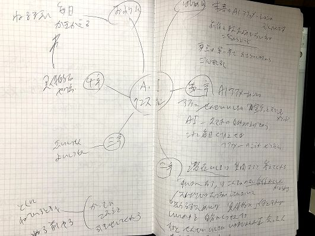

| あなたも３日でプロ作家になれる！ 出版しようぜ (マキコミブックス) | |
| 六本木タツヤ & 六本木ケンヤ & 宮本美穂 & 有銘ユーリ & Chompoo☆ちひろ | |
| Makikomi Works LLC (2018) | |
目次
はじめに
こんにちは。
プロ作家の六本木タツヤです。
私は現在、日本のAmazon.co.jpにて、30冊以上の書籍を発売しています。
そのうち、いわゆる「紙の本」として、出版社から商業出版したのは、一冊のみ。
残りはすべて 、 Amazon Kindle Direct Publishin g というサービスを使い、Amazon の Kindl e 用電子書籍を自分で作成し、出版しています。
そう、いまあなたがお読みになっている本書も、Kindle Direct Publishing （ KD P ）で出した本です。
Direct Publishing、まさに 「直接の出版」 です。
このサービスが普及することによって、今後、世界中から「出版社」というものが、徐々に姿を消していくでしょう。
わかりやすくいうと「潰れる」ということです。
なぜなら、もはや「紙の本」も「書店」も、いずれ世の中から、必要とされなくなってくるからです。
Amazonさえあれば、Kindleさえあれば、紙の本も書店も出版社も、存在する「意味」がなくなってくるからなのです。
このことに気づいた私は、2018年の2月から5月までの４ヶ月間に、一気に30冊ものKindle本を作成し、出版しました。
そして、それらを売るためのキャンペーンなどにも参加し、Amazonランキングで上位を独占する方法も身につけました。
本書では、
「プロ作家になりたい」
というあなたのために、
・誰でも３日でプロ作家になれる方法
をお伝えしていきます。
本書を読もうと思ってダウンロードしてくださったあなたは、
「本が出したい」
「プロ作家になりたい！」
と、思っていらっしゃるのではないでしょうか？
その望み、 ３日で実現 します。
本書を読み終え、書かれていることを実践したとき、あなたはすでに「プロ作家」に生まれ変わっています。
そして、今日から最短で3日後（もっと早い人は、明日にでも）プロ作家としてデビューすることができるのです。
いますぐ、本文にお進みください。
第１章 私たちもプロ作家デビューした！
まずこの章では、実際に私の「プロ作家コンサル」を受けて、
http://makikomi.jp/3days/#form
プロ作家デビューした皆さんをご紹介します。
「香水ぼーやのバーチャル・フレグランス」六本木ケンヤ
http://makikomi.jp/3days/2018/04/09/kenya/
プロ作家デビュー一人目は、私の息子です。
20歳で独立起業し、プロの調香師として活動しています。
この時点で、そうとう珍しい存在ですよね。
若い男性でプロの調香師。
この経歴だけで、出版のネタとしては十分です。
簡単なヒアリングの後、一日で原稿を完成させ、
4月7日に「香水ぼーやのバーチャル・フレグランス」でプロ作家デビューしました！
そして見事、Amazon売れ筋ランキングで１位を獲得しました。
本人から、ご感想をいただいております。
この度はAmazonにて 香水ぼーやのバーチャルフレグランス を出版し、
皆様のご尽力のおかげ様で見事 １位 を取ることができました！
誠にありがとうございます！
僕は若くて実績もないので、どうにか実績を積めないかと父に相談したところ、
Amazonの出版コンサルを始めたとのことでしたので、やってみました。
もちろん本を書くなんて経験がないのでできるか不安でしたが、
父の指導のもと書いてみたら、 一日で 完成してしまいました。
そしていざ出版してみたら皆様にたくさん応援して頂き
見事１位を取ることができました！
本を通して今まであまり接点のなかった友人にも応援して頂き、
出版コンサルの凄さを体感致しました！
早くも２冊目を出そうと考えておりますので、２冊目も応援よろしくお願い致します！
この度は誠に応援ありがとうございました！
「美容整美士 ビューティー・メカニック」宮本美穂
http://makikomi.jp/3days/2018/04/11/mecanic/
プロ作家デビュー二人目は、茅ヶ崎のエステサロンで活躍中のエステティシャンです。
エステティシャンなんて珍しくも何ともないですが、彼女の場合はなんと、前職が「自動車整備士」。
そこからエステティシャンなんて、180°真逆の業界への転職ですよね！
この経緯、誰だって聞きたくなります。
そこで、その経歴を書いてもらいました。
そしてさっそく、Amazonからプロ作家デビュー！
4月11日に「美容整美士 ビューティー・メカニック」をリリースし、
激戦区の 「美容・ダイエット部門」 で１位に輝きました！
ご本人からも、喜びの声をいただいています。
美容と健康について思うことを文字にしてみたら？と勧められてコンサルを受けながら本を書いてみました �� ✨
文章能力ゼロの私にできるのかな � � と心配でしたが、何とか出来上がりました！
思っていることを文章にするって難しいけど、自分てこんな人だったんだーと振り替えれました！
エステで人生が薔薇色に変わった、た〜くさんの方達を見てきましたので、何かのきっかけになれれば幸いです �� ��
六本木タツヤさんのコンサルで書いた電子書籍が何と
✨ 2部門で1位 ✨
何でもやろうと思えば出来るんだな〜
「笑顔の投資家 スマイル・インベスター」有銘ユーリ
http://makikomi.jp/3days/2018/04/21/smile/
三人目の実例は、沖縄県出身、大阪市在住の翻訳家、有銘ユーリさんです。
東京外語大学でハングルを学び、沖縄と韓国を股にかけて活躍。
しかしその一方では、韓国で入国を拒否されたり、ファイナンス面で苦労したりと、ドラマチックな人生を送っています。
「こんな私が本を書くなんて......」
とためらっていましたが、
４月26日に「笑顔の投資家 スマイル・インベスター」でプロ作家デビュー。
「女性と仕事」部門で１位に輝きました！
個人的なことを書いて人に見せることに最初はためらいもありましたが、
本を読んでわざわざ感想を送ってくれた方もいて、
別にかっこいい成果とかがなくても、経験や想いそのものが
それぞれ特別なものだと、理解できました。
むしろ、かっこ悪いところを見せるほうが重要なのかも。
今まで私は自分を繕っていて、独りよがりでした。
これからは、もっと周りの人の経験や想いにも耳を傾けようと思います。
そして、自分の「笑顔」の資産価値を高め、周囲の人へ投資して、
本物の笑顔を世界中に広めてきたいです。
見てくれている人は見てるし、
見ていない人は見てない！
周りの目なんて気にしても仕方ない。
本を出すまでは躊躇してばかりだったのに、
今ではあれもこれも書いておけばよかったと思っています
もっとも、今は世界中どこでもたくさんの人と繋がれるけど、
一人ひとりのことをじっくり知る時間、深い付き合いができる関係って少なくなりました。
一冊くらい自分の事を書いた本を持っておくのも悪くないです
こんな素敵な感想をお寄せいただきました。
「魔女という生き方」Chompoo☆ちひろ
http://makikomi.jp/3days/2018/05/08/witch/
そして４人目は、すでにメディアなどでも大活躍中の「マゼンタの魔女」。
彼女の場合は、私のコンサルで次々にプロ作家がデビューするのを見て、自分でもやる気満々でした。
簡単なアドバイスをしただけで、自分でどんどん作業を進め、
「魔女という生き方: 魔女になりたい貴女へ贈る、今日から始める魔女活のススメ」でデビュー。
あっけなく、３部門で１位という快挙を成し遂げました！
著書の中で、出版に至った感想をお書きになっています。
本書の出版にあたっては、電子書籍出版多数、ランキング 1位獲得多数のベストセラー作家、六本木タツヤさんより電子書籍出版のノウハウを教えて頂き、多大なご協力をして頂きました。
六本木さんから LINEのメッセージで軽いノリで「ちひろさんも出してみませんか？」と言われたのがつい先月のこと。
これがきっかけでやる気になって、正味一週間ほどで完成させることができました。
すっかり出版のノウハウをおぼえて、すでに第２作、第３作の準備を進めています！
このように、メディアでも活躍中の女性経営者から、起業したての若手事業家、そして組織にお勤めの方まで。
「誰でも」３日でプロ作家としてデビューし、Amazonで１位が取れるのです。
そう、次は、あなたの番です。
第２章 こうすれば、３日でプロ作家になれる！
前章で見ていただいた皆さんは、すべて私が直々に、コンサルやアドバイスをしてきた方です。
実際、私のコンサルやアドバイスを受けた方が、誰でも簡単に確実に、プロ作家としてデビューできます。
そして、Amazon売れ筋ランキングで１位になることができます。
その方法は、こちらのページでもご紹介しておりますが、
これを見て「即座に」コンサルを申し込むような行動力のある方も、なかなかいないでしょう。
そこで本書では、私のコンサル内容の「ごく一部」を抜粋してお届けします。
本書を読むだけでも、Amazonからプロ作家デビューすることは、誰にでも簡単にできます。
お金は一円もかかりません。
最短で３日あれば、あなたもプロ作家になれるのです。
ちなみに私は、もう30冊以上も出版した経験がありますので、いまでは「午前中」だけで、思いついた本を書き上げて出版まで果たしています。
プロ作家デビューまでの３日間
3日でプロ作家になるまでに、何をするべきか？
私が指導しているのは、この３ステップです。

以下、一日ずつ、具体的に見ていきましょう。
第３章 【一日目】
１・アカウント取得
まずは、AmazonのKDPサイトに、自分のアカウントを開設します。
これが、慣れないうちは面倒くさいのですが、逆に言えば、ここさえクリアすればもう、後は思いついたらポンポンと出版できるようになります。
なお、Amazonからも、公式のマニュアルが無料で配布されています。
「KDP クイック スタート ガイド」

これを見ながら出版するのがいちばん確実なので、実際に出版するときは、こちらで最新の情報を確認しながらにしてください。
サインイン
まず、Amazon kindle ダイレクト・パブリッシングで検索し、
https://kdp.amazon.co.jp/ja_JP/

画面の右側から 「サインイン」 します。
初めてサインインしたときは、
KDPの規約に 「同意する」 をクリックしてください。
アカウントの設定
ログインできたら、アカウントの設定です。
名前から住所まで、入力してください。
そして面倒なのが、次の「税金に関する情報」です。
これは、アメリカに居住していたり、アメリカで仕事をしていたり、アメリカで出版する、という人以外には関係ないところなので、簡単に登録だけ済ませて先に進みましょう。
「あなたは米国人ですか」 という質問には 「いいえ」 。
「受益者の種類」 は 「個人」 でいいでしょう。
次の「定住所」ですが、これは英語で入力してください。
入力の仕方は、このようなサイトを参考にしてください。
http://judress.tsukuenoue.com/
「仲介者として行動する代理人ですか」 も、普通の人は 「いいえ」 ですね。
上の質問はすべて選ばず、下の質問も 「持っていない」 を選択。
これで「保存して続行」すると、確認画面が出るので、これも「保存して続行」。
この画面でも、このように選択します。
すべてにチェックを入れたら、ローマ字で署名と、メールアドレスを入力。
で「提出」です。
これでアカウント登録は完了です！
※質問される内容などについては、予告なく変更になる場合があります。
銀行口座の登録
続いて、売上が支払われる銀行口座を登録しましょう。
そして、ロイヤリティ（売上）の支払い方法ですが、
特別な場合がなければ 「電子資金振替」 で。
そして最後に、「支払いの設定が完了していません」と出ますが、
問題ないので「いいえ」を選んで、これで完了です。
お疲れ様でした！
２・テーマを決める
アカウントの開設を済ませたら、いよいよ執筆準備です。
どんな本を書くか、テーマを決めましょう。
もちろん、すでにテーマが決まっているのなら、先に進んでください。
たとえば「小説！」だというのなら、もういきなり原稿を書き始めても構いません。
また、すでにブログを何年も続けているとか、過去に文章を書きためていた人でしたら、特に苦労することもないでしょう。
しかし、これまでに、ほとんど文章を書いたことがない人や、
「私なんか、何も書くことない～」
と思っている人は、まずここで挫折します。
そういう場合は、周りの人に聞いてみることをお勧めします。
そうすれば、
「あの話、本にすればいいのに！」
と、アドバイスしてもらえるはずですから。
３・タイトルを決める
テーマが決まったら、いよいよタイトル決めです。
Amazonで売る場合に限らず、本が売れるか売れないかは、ほとんど「タイトル」で決まります。
このタイトル決めのノウハウ、ネーミングのノウハウだけでも何冊も本が書けますので、本書では省略します。
お金と時間があるなら、プロに相談するのがベストでしょう。
こういうことに関しては、本を出したこともない素人に相談しても、いい答えは得られません。
以上、ここまでできれば、一日目は終了です。
第４章 【二日目】
二日目はいよいよ、原稿を書き始めます。
書き始めるどころか、この日一日で「脱稿」まで進んでもらいます。
「そんなに早く書けない！」
とビビると思いますが、Kindleで発売する場合だったら、何も200ページとか300ページも書く必要はありません。
やたらと「文字数」にこだわる人もいますが、そういうことをしていると、いつまで立っても出版なんかできません。
かといって、あまりにも短すぎるようでは、審査が通らない可能性もあります。
そこで、最低ラインとしては、原稿用紙で言えば「10枚」程度。
これだったら、中学生の作文でも書けるような分量ですよね？
最初は、それで構わないのです。
まず、出版までのノウハウを憶えてから、長文を書けばいいのですから。
「書きすぎない」のがポイント
というより、Kindleで出版するのなら、真っ先に考えるべきは、
「どうすれば、書きすぎないようにできるか」
です。
本屋さんで売っているような紙の本だと、長々、ごちゃごちゃといろんなことが書いてありますが、あれは「水増し」するためです。
あまりに内容が短すぎると、値段を付けて売ることができないので、どうでもいいことを書き足して水増ししているのです。
だから、書店で売っているような本は、つまらないのです。
たとえば、著者が伝えたいことが「３つ」あるとした場合、それを本にするとしたら、「５つか７つに増やしてくれ」と、出版社から言われます。
３つだと、あっという間に終わってしまうため、見た目が悪いからです。
だから著者は仕方なく、無理矢理書きたくないことまで書いて、ページ数を稼いでいるのです。
しかし、Kindle本の場合だと？
話は、逆になります。
著者の伝えたいことが３つだったら、それを「３冊」に分けて出せばいいのです。
つまり、一冊につき「ワンテーマ」で十分なのです。
そして、その分、紙の本より安い定価をつければいいだけです。
ここが、紙の本とKindle本との、大きな違いです。
このへんの感覚が分からないと、「あれもこれも」詰め込みすぎて、結局は読んでもらえなくなります。
私がクライアントさんに言うのは、
「駅２つで読み終えるだけで十分！」です。
つまり、一冊あたり10分もあれば読み終える。
それでも、Kindle本としては成り立つし、売れるし、高い評価ももらえるのです。
１・構成を考える
このように「あれもこれも書きすぎない」ことをキモに銘じてから、全体の構成を考えましょう。
私はここで、「マインドマップ」の使用を勧めています。
マインドマップとは、大きめの紙に、思いついたことを波状的に書き出していく手法です。
これも、「マインドマップ」でGoogle検索すれば、たくさんのノウハウが出てきます。
２・目次を作る

私はこのように、ノートの見開きに、「もくじ」を書いてから本文の執筆に入っています。
構成の例
では、ここで特別に、私がいつもクライアントに教える「フォーマット」をご紹介します。
このフォーマットを見た上で、私がプロデュースしたプロ作家の作品を読んでいただければ、本当にその通りになっている、ということが理解できます。
そのフォーマットとは？
❏ はじめに
❏ 第１章：私はこうして●●した！
❏ 第２章：●●するためのポイント
❏ 第３章：あなたもこうすれば●●できる！
❏ おわりに
これだけです。
これでたとえば、「１ヶ月で10キロやせた」とか「１ヶ月で英検に受かった」「40歳で出産できた」というテーマで書けば、あっという間に一冊が書き終わります。
たとえばダイエットなら、こうなります。
●はじめに
はじめまして！ 私は○○と申します。
私は、たった1ヶ月で10キロやせました。
そのおかげで、素敵な彼氏もできて、とてもハッピーです。
本書では、その方法をご紹介します！
●第１章
私は、ずっとデブでした。
でも、こんなことがきっかけで、やせようと決意しました。
最初は失敗続きだったけど、あることに気づいたら、たちまちやせることができました！
●第２章
やせられない原因は、こういうことです。
こういうところに気をつければ、やせることができます。
●第３章
あなたも、こうすればやせられます。
一日目は......
一週間目は......
一ヶ月目は......
ほら、やせたでしょう？
●おわりに
最後までお読みいただきまして、ありがとうございました。
もし分からないことがありましたら、ご連絡ください！
ほら、これで一冊が完成です。
３・執筆する
ここまでできたら、あとは書くだけです。
くれぐれも、「書きすぎない」ようにしましょう。
「ちょっと、短すぎるかな？」
くらいで、ちょうどいいです。
どうでもいいことは、どんどんそぎ落としましょう。
書くためのツール
なお、原稿を書くためのツールですが、現代では「何でもいい」が正解です。
慣れてきたら、スマホのメモ帳でも書けますし、それを出版することもできます。
私の場合は、自宅でも移動先でも、思いついたときにいつでもかけるように、クラウドのアプリを利用しています。
本書も 「Googleドキュメント」 で書きました。
https://www.google.com/intl/ja_jp/docs/about/
このドキュメントの便利さは、「目次」を自動で作ってくれる点です。
詳しくは、こちらを参考にしてください。
https://support.google.com/docs/answer/116338?co=GENIE.Platform%3DDesktop&hl=ja
原稿をダウンロードする
さて、一日かけて、執筆が完了しました。
そしたら最後に、原稿のファイルを「ダウンロード」します。
通常は、「.docx」形式がお勧めです。
ここまでで、二日目が終了。
いよいよ三日目、出品に進みます！
第５章 【三日目】
原稿までできれば、もうあとは簡単です。
１・表紙を作る
本が売れるかどうかは、タイトルともう一つ、「表紙」のデザインでほとんどが決まります。
あまりにも素人臭い表紙だと、手に取ってももらえません。
かといってプロに頼むのも、お金がかかります。
そこで私が使っているのが、「Canva」というサイトです。
豊富なデザインや書体の中から、自分で選べますので、簡単にかっこいいデザインができます。
表紙もダウンロードできたら、いよいよ出品です。
２・出品する
出品は、再びKDPにログインして行います。
アカウントの開設に比べると、非常に簡単です。
「新しい本を作成」 を選ぶと、先に進めます。
指示されたとおりに入力していけば、特に難しい点はありません。
いくつか、ポイントだけ解説します。
レーベル
レーベルというのは、もし何冊も本を出す場合、自分なりに「ジャンル分け」したいときに使います。
私の場合は、自己啓発ものなら「マキコミブックス」。脱依存症ものなら「アンインストール・ブックス」にしています。
シリーズ
シリーズ ものは、ここにタイトルや「第何巻」という数字を入れると、
このように「まとめ買い」を勧めてくれます。
これはもう、ほんとに「プロ作家」という感じがしますね。
ここでは、上を選びます。
キーワードとカテゴリー
ここでは、Amazonで「検索」されるための情報を選びます。
「キーワード」では、あまりにも「健康」みたいな漠然としたキーワードではなく、ニッチな単語を入れたほうが引っ掛かりやすくなります。
また「カテゴリー」ですが、自分が選んだカテゴリーが、必ずしも反映するとは限りません。
私の感覚では、もしかしたら「人工知能」が、自動的にカテゴリー分けしてるんじゃないかと思っています。
もし、出版ができた段階で、あまりにも不本意なカテゴリーに入れられていたら、Amazonに変更を依頼することができます。
マニュアルを参考に
ここから先は、Amazonの公式マニュアルを見ながら、誰でも出品できると思います。
そして、
３・審査が通れば出版完了！
ここまで、最大で72時間かかります。
私の体験では、そこまでかかったことはめったにありません。
だいたい半日、6時間から18時間ほどで審査が完了し、メールが届きました。
審査に通らないとき
ごくまれに、審査にやたら時間がかかったり、却下されることがあります。
特に、内容にエロとかグロがない場合、考えられるのは、「ブログとの類似」です。
つまり、自分がブログに掲載していた文章をKindleで出そうとすると、
「パクリじゃないですか？」
と、疑われるわけです。
でも、そういうことでも、もう一度出品しなおせば、問題なく審査に通ります。
この瞬間、あなたは「プロ作家」として、Amazonデビューを果たしたことになるのです！
著者セントラル
さて、Kindle出版が本当にすごいのは、実はここからです。
Amazonで一冊でも本を出版すると、
こういう「著者ページ」が作れるのです！
出版が完了したら、「著者セントラル」に入り、
https://authorcentral.amazon.co.jp/gp/home
自分の情報を登録しましょう。
この瞬間にあなたは、東野圭吾だとか、村上春樹と同じように、Amazonにおいては「プロ作家」と認定されるのです！
これが、どれほどすごいブランディングになるかは、想像できるでしょう。
終わりに
出版、そして......。
以上で、AmazonのKindleで「プロ作家」になる方法は、完了しました。
しかし、本当に楽しいのは、この先です。
どうすれば、Amazonの売れ筋ランキングで「１位」になれるのか？
その具体的な、そして「確実な」方法は、コンサルで教えます。
お申し込み時、本書を「読んだ」とお伝えいただければ、コンサル代を割引します。
そうすればあなたも、３日後には、プロ作家としてデビューできるのです！
ぜひ、後に続いてください。
2018年5月24日
六本木タツヤ
【六本木タツヤ 著書一覧】
【アンインストール・ブックス】
禁煙しないでタバコをやめる! ニコアン・セラピー
デブアン！ : デブラウィルスをアンインストールして、ダイエットもリバウンドもせずに腹筋を割る方法
本気でやせたければお酒をやめなさい: プロも知らない酒アン・ダイエット
うつアン！: 「うつ」を完全にアンインストールする七つのソリューション
ジョブアン！: 労働をアンインストールして自由に生きよう
菓子アン！: お菓子をアンインストールして、快適な毎日を過ごそう！
【学びブックス】
数字嫌いが2ヶ月で、簿記3級に一発合格する勉強法: 一生、学んで暮らしたい
もっとも効率が悪く、もっとも効果が高い「ニホアン英語勉強法」あなたも半年で洋書が読める！: 一生、学んで暮らしたい
洋書1000冊、無料で読もう！Amazon・Kindleで英語の勉強: 一生、学んで暮らしたい
50歳からの宅建一発合格！ 一生、学んで暮らしたい
【マキコミブックス】
人間は、まばたきするたびに生まれ変わっている: すべての悩みが一瞬で消し飛ぶ、まばたきリフレッシュ
フルフィルノート: すべての目標は必ず実現する！
レスノート: すべてのストレスをストレスレスに！
９時５時スリーパーになろう！: 寝るだけで成功する睡眠術
思い立ったら、すぐ出版！: Amazon Kindleであなたも今すぐ作家デビュー
あなたも３日でプロ作家になれる！
歌って成功！ アファメーソン: アファメーション＋ソングで脳内リピート・エンドレス！
不安も現実化する: それでもプラスになればいい
富の満ち引き: マネタイド理論
思い立ったら、すぐ出版！: Amazon Kindleであなたも今すぐ作家デビュー
A.I.アファメーション: 自動音声読み上げによる成功法則
A.I.クエスチョン: 自動音声読み上げによる成功法則Part２
A.Iイングリッシュ: 自動音声読み上げによる英語攻略法
A.I.サブリミナル: 人工知能を活用した成功法則 A.I.成功法則
行動者諸君！:労働者から、行動者へ
取り越しグロウ: 輝く未来を育てよう！
【ことわらブックス】
ことわらセールス: 100%絶対に断わられないネットワーク・ビジネス戦略 断わられるセールスから断わらせるセールスへ！
ネットワーク・美女ネス: 美貌と人脈を資産に変える！ 美女がいちばん似合う職業
ネットワーク・ビジネスを上手にことわる３つの質問
【メルマガまとめ読み】
2018年1月号★「一生、学んで暮らしたい」まとめ読み : 月刊「一生、学んで暮らしたい」
2018年2月号★「一生、学んで暮らしたい」まとめ読み : 月刊「一生、学んで暮らしたい」
2018年3月号★「一生、学んで暮らしたい」まとめ読み : 月刊「一生、学んで暮らしたい」
2018年4月号★「一生、学んで暮らしたい」まとめ読み : 月刊「一生、学んで暮らしたい」
────────────────────
■ 発行者：六本木タツヤ（辰也）Tony Roppon
■ メルマガ： http://www.mag2.com/m/0001681430.html
■ LINE ：t_roppongi
■ HP： http://makikomi.jp/
■ Twitter： https://twitter.com/t_roppongi
■ Facebook： https://www.facebook.com/Tony.Roppon
■ Instagram：tony_roppon
────────────────────